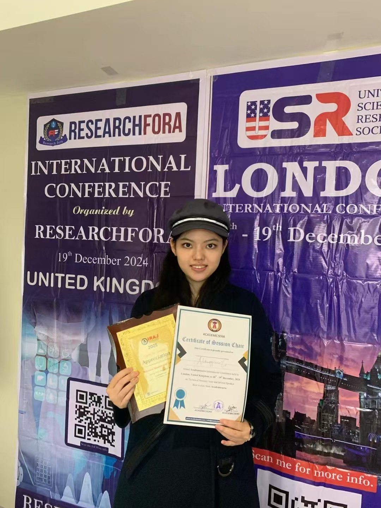

Mingqian Li
I am a PhD student in Economics at the Center for Economic Research, Shandong University, advised by Professor Jaimie W. Lien.
My research interests are in behavioral and experimental economics and game theory.
I received my MSc from University College London (UCL) and my B.A. from McGill University.